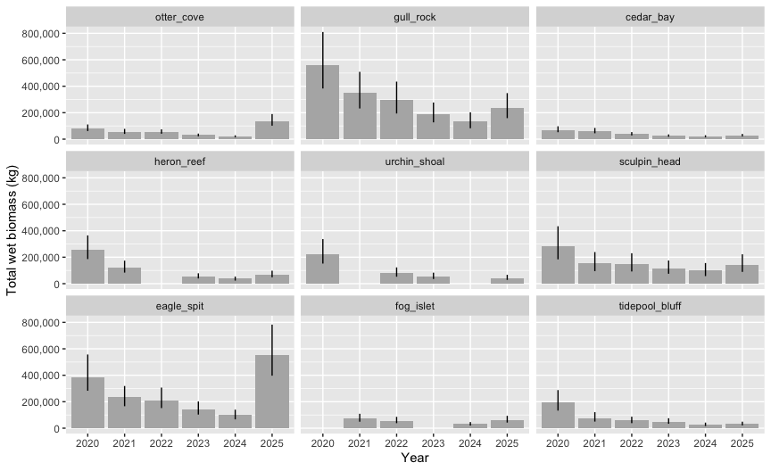

kelpbio estimates the biomass of Nereocystis luetkeana and Macrocystis pyrifera kelp beds with Bayesian hierarchical models. The total biomass combines three sources:
- plants counted and measured by in situ surveys;
- the canopy area mapped from aerial imagery;
- a calibration model that relates the two.
Methods are designed to produce annual estimates (e.g., for the peak season), with uncertainty propagated through each sub-model into the totals.
Installation
Install the pre-built binary from the Hakai R-universe (macOS and Windows):
install.packages(
"kelpbio",
repos = c("https://hakaiinstitute.r-universe.dev", getOption("repos"))
)Install from source (Linux, or to build from GitHub):
# install.packages("pak")
pak::pak("HakaiInstitute/kelpbio")Source builds require a C++ toolchain:
- Linux:
sudo apt install build-essential - Windows: Rtools
- macOS:
xcode-select --install
Usage
The examples use simulated data and invented site names. The weight and size models are fitted first.
library(kelpbio)
fit_weight <- kb_fit_weight_nereo(data_weight_sim_nereo)
fit_size <- kb_fit_size_nereo(data_size_sample_sim_nereo)The biomass (kg/m²) of each in situ survey is predicted from the two models and the survey counts.
set.seed(1)
biomass <- kb_predict_biomass_in_situ(
fit_weight,
fit_size,
data_survey_in_situ_sim_nereo,
progress = "none"
)The cover calibration relates estimated in situ biomass to the canopy percent cover of each plot, the area bounding a survey (plot_area_m2 in data_survey_in_situ_sim_nereo).
fit_cover <- kb_fit_cover_calibration_nereo(biomass)The calibration applied to each canopy map gives the total biomass, with 95% compatibility limits.
totals <- kb_predict_biomass_canopy(fit_cover, data_survey_canopy_sim_nereo)
totals
#> <kb_predictions> response: biomass_kg | by: site, year
#> # A tibble: 49 × 11
#> site year canopy_area_m2 canopy_tide_height_m classified_area_m2 region
#> <fct> <fct> <dbl> <dbl> <dbl> <fct>
#> 1 otter_co… 2020 6817 1.2 18504 north
#> 2 gull_rock 2020 53242 0.15 142539 north
#> 3 cedar_bay 2020 5893 1.05 11737 north
#> 4 heron_re… 2020 24787 0.6 51227 north
#> 5 urchin_s… 2020 20431 0.75 55633 south
#> 6 sculpin_… 2020 16455 1 45632 south
#> 7 eagle_sp… 2020 38273 1.3 76960 south
#> 8 tidepool… 2020 20110 0.2 41234 south
#> 9 otter_co… 2021 4819 1.6 9556 north
#> 10 gull_rock 2021 38877 0.2 83128 north
#> # ℹ 39 more rows
#> # ℹ 5 more variables: cover_support <chr>, biomass_kg <rvar[1d]>,
#> # estimate <dbl>, lower <dbl>, upper <dbl>
kb_plot_predictions(totals, geom = "bar")
Learn more
- Get started: data format, fitting, convergence, and predictions.
- Advanced usage: priors, diagnostics, and the Stan ecosystem.
- Methods: the models and how predictions are computed.
- kelpbiodata: Hakai Institute data and models fitted to them.
- kelpbioshiny: an app for running kelpbio without writing code.
Citation
If you use kelpbio in your work, please cite it. Use citation() to get a formatted citation and BibTeX entry:
citation("kelpbio")
#> To cite kelpbio in publications use:
#>
#> Dalgarno S (2026). _kelpbio: Bayesian Kelp Biomass Estimation_. R
#> package version 0.0.0.9000,
#> <https://github.com/HakaiInstitute/kelpbio>.
#>
#> A BibTeX entry for LaTeX users is
#>
#> @Manual{,
#> title = {kelpbio: Bayesian Kelp Biomass Estimation},
#> author = {Seb Dalgarno},
#> year = {2026},
#> note = {R package version 0.0.0.9000},
#> url = {https://github.com/HakaiInstitute/kelpbio},
#> }